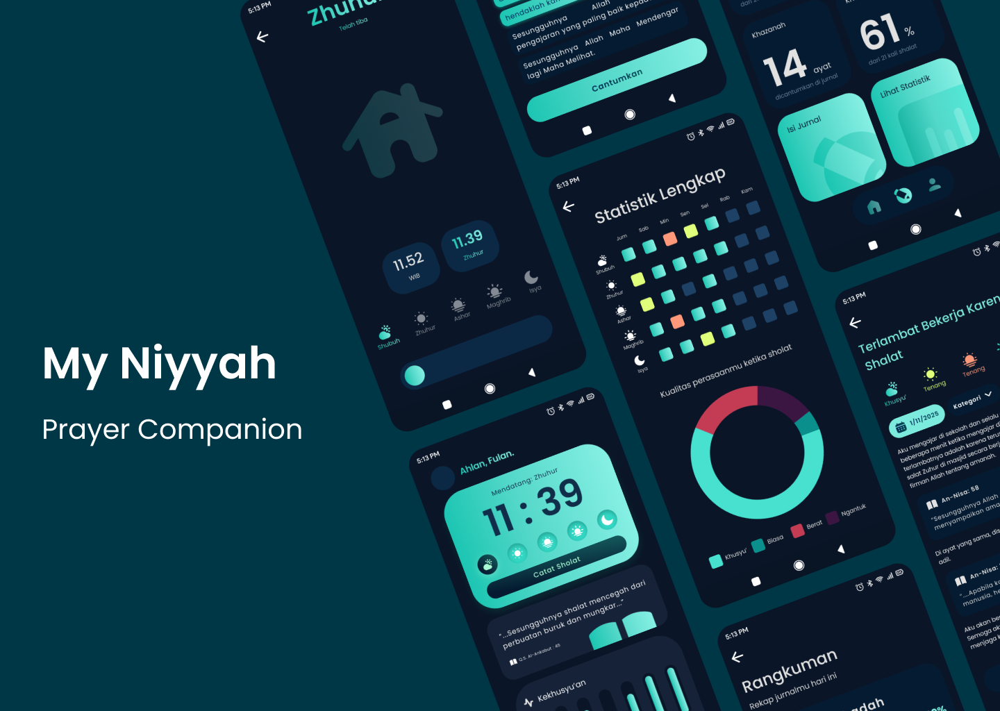
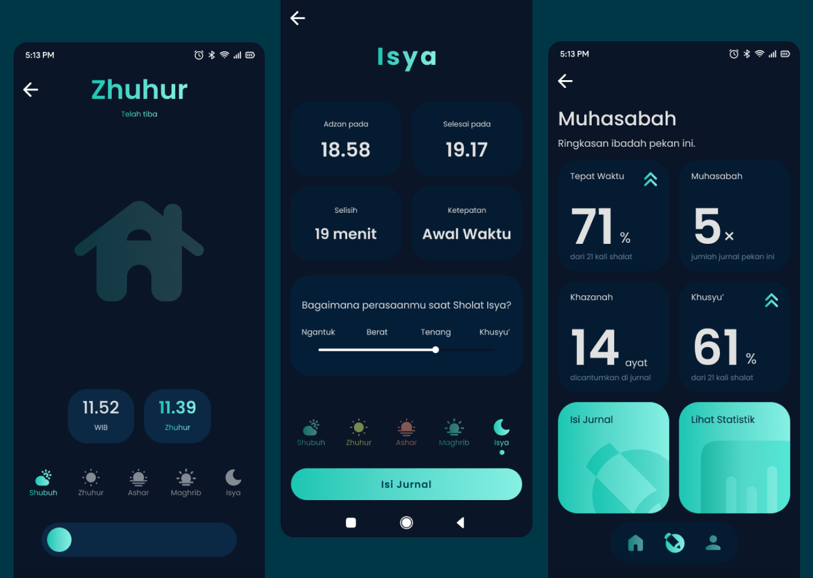
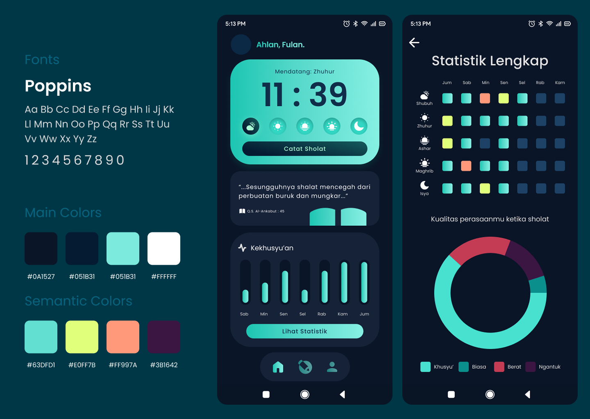

My Niyyah
Personal Project
Product Design
UI/UX Design
My Niyyah is designed for Muslims seeking spiritual consistency without the noise. It bridges the gap between a standard habit tracker and a cluttered Islamic super-app by focusing on two core pillars: Awareness and Compassion.

See the Showcase
Pain Points
Market Overload
Existing Islamic apps are often cluttered with ads, news, and excessive features, causing digital fatigue during spiritual moments.
Emotional Gap
Traditional habit trackers feel robotic and lack spiritual context, while religious apps can feel intimidating or judgmental when a user misses a prayer.
Inconsistency
Users want to reflect (Muhasabah) but don't know where or how to start to track their spiritual patterns over time.
Our Vision
Design Philosophy
"A companion, not a judge."
The Approach
We simplified the journey into three steps: Act (Simple tracking), Reflect (Gentle journaling), and Understand (Weekly insights).
Core Value
A distraction-free environment that prioritizes the user's mental and spiritual peace over engagement metrics.
MVP Features
Distractionless Tracking
A clean, minimalist interface to log daily prayers instantly to reduce friction and keep the focus on the act of worship.
Meaningful Insights
Weekly patterns that show growth rather than failure to provide a data-driven view of one's spiritual journey without the pressure of a perfect streak.
Guided Muhasabah
Gentle prompts for evening journaling to help users move beyond checking boxes and start understanding their heart's condition.

Design Language
Visual Persona
Calm, serene and grounded.
Typography and Colors
Using soft, earthy tones and breathable whitespace to induce a Zen state.
